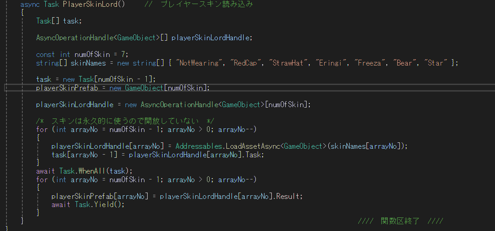
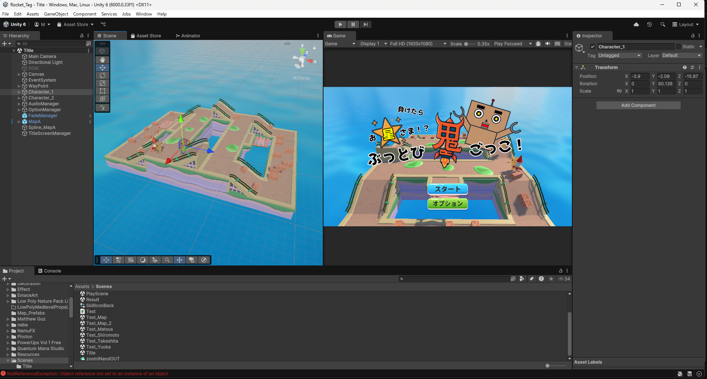
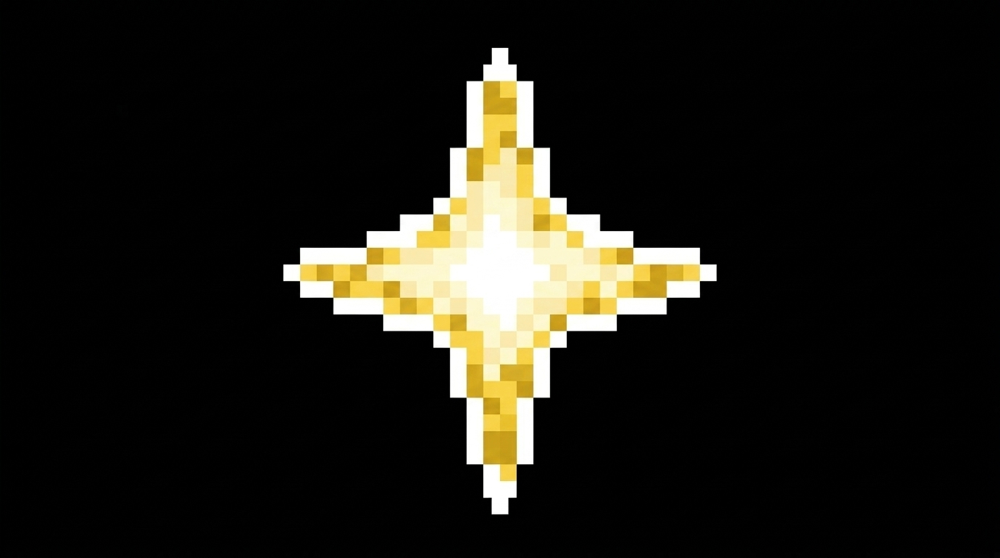
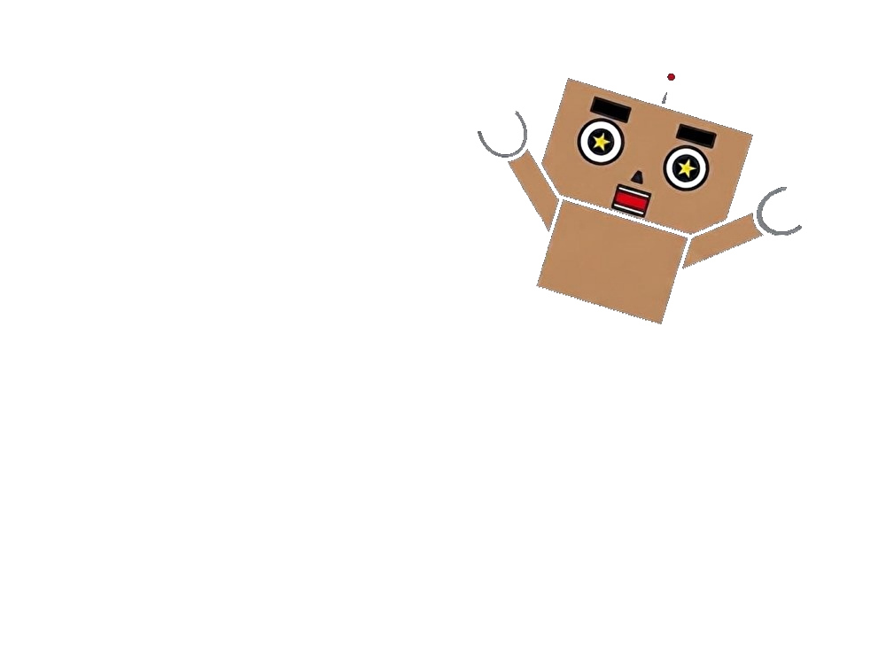
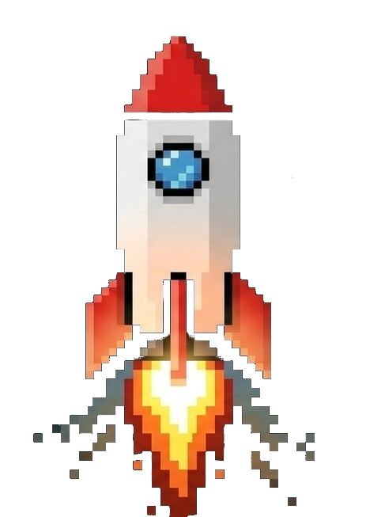

制作1作品目「ぶっ飛び鬼ごっこ」
内容:脱落式オンライン鬼ごっこ
制作時期:2025/1 ~ 2025/7
制作人数:8人
役割:プログラマ
担当箇所:スキンシステム、ロケット挙動、エフェクト調整
初めての長期チーム制作ながら、プロのエンジニアに負けないコーディングを
したいと思い、スキンシステムを任された際にAddressableに挑戦し、
約1週間、どうしてもわからない部分を
エンジニアの先生に質問しながら、スキンのロードを実装しました。

メンバー全員が初めての長期チーム制作で、初めてのオンラインゲーム制作で
コンフリクトに悩まされ、プレイヤーが一人でないことのコードの難しさに悩まされ
メンバーのモチベーションが下がり、多くのエンジニアがバグ解消をするのが鈍くなっていく中で
高校で競技大会などに出場し身に着けた、コード読解力で色んな人のバグを解消することを頑張りました。
またスキンはもちろん頑張ったのでっすが、エフェクトの調整をする際は、ゲームの面白さの分析も
未熟な段階でしたが、エフェクトに対するユーザーの反応を考えて試行錯誤していました。

良かった所は、オンラインに挑戦したことです。
オンラインゲームを制作したことで、より処理のタイミングなどエンジニア同士で
気にする必要があり、初めての長期のチーム制作でチームでのコーディングの理解が深まったのは
良かったと感じています。また並行処理に触れて難しそうな事も意外と出来ると思えた事もよかったです。
だいたい1年経った今、もっと色々なことに手を付けたかったなぁと思います。
Addressableや並行処理に挑戦した勢いのまま他の実装にも手を伸ばして、
エンジニアとしての力をもっとつけたかったなと今では思います。
またOWのロードホックのフックのような、他のプレイヤーを引き寄せるスキルが
工数の関係で没になってしまい、もっと速く精度高く作ってしっかり実装したかったです。


